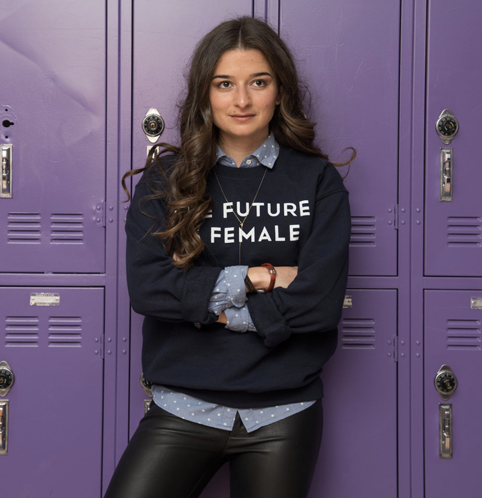

Precious has been a standout ever since I first met her as a part of an
elite high
school STEM
program called SMASH. I watched her journey through UC Berkeley and into her career, and her passion
for bridging the access gap in STEM for underrepresented communities has never wavered. I am
fortunate that Precious chose to volunteer as a teaching assistant in my AP Computer Science
Principles class. Her mini-lessons and hands-on support to our students is invaluable. She has a
bright future as an educator. I cannot wait to volunteer in her classroom someday soon!

Claire Shorall
Co-Founder, TopKnot
Precious had a tremendously positive impact on our school’s culture. In
addition to project managing
a number of executive projects, she spearheaded community engagement initiatives that deepened our
staff and student’s relationship with each other and their city.
Jeremy Rossmann
Co-Founder, Make School
Precious worked with me as the Research and Programs Intern at the Kapor Center in 2018-2019. She
was an excellent fit for her role and a joy to work with all the way through the internship!
Precious was highly motivated to make significant contributions to every project she worked on, with
a deep interest in (1) developing her project management, education research, and consultancy
skills, and to (2) to learn as much as she could from every task assigned to her.
At every point in her work with the Research Team at the Kapor Center, Precious displayed an
exceptional level of emotional intelligence, strategic thinking, curiosity, organizational skill,
and facility with data management and creation. She impressed the team with her dedication to the
work and her adroit communication skills. I highly recommend Precious and believe she would be an
asset to any organization or company!
Frieda McAlear
Senior Research Associate, Kapor Center
I am confident to say that Precious has a profound way of demonstrating
the art of leadership both on an individual basis and to the masses. As a fellow co-founder for the
Invention Corps of UC
Berkeley, I witnessed Precious's sense for innovation and determination by creating student-led
organization that used design thinking to tackle issues in poverty, society, health, and the
environment. For the past 3 years, Precious's consistent ability to inspire others has since brought
our initial vision into reality and has since reached communities on the global scale. Upon our
simultaneous pursuit of impact within technology, innovation, and education, I know she will
continue to use her passion and technical abilities to achieve nothing but excellence.
James Zamora
Project Manager, VMWare